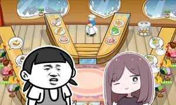

第一章
老冯是一个普通的怪阿姨，有一天，老冯独自走在偷窥女澡堂的路上，当她踮起脚尖，提起裙边，小手轻轻搭在浴池的窗前，一道圣洁的光辉突然劈中了老冯的秃头，老冯仅剩的一根头发被劈得粉碎。老冯顿时大惊失色，灵魂出窍，来到了魔王的面前。
魔王：“你马上就要死了，但是我需要你帮我完成一件任务，只要你完成了，我就送你回澡堂。”
老冯：“是什么？”
魔王：“我要你去找一个叫老周的人，从她那里得到‘哈坨’，带回来给我。”
“‘哈坨’是什么？”
“是一种神奇的物质，每个人都有，但是只有特定的人才可以获得它。”
“那我要怎样获得它呢？”
“我也不知道。”
“……”
“但是你有这个能力，所以我才选择你去帮我完成任务。”
“……所以就这么随意的让我死了吗！”
“咳，马上就让你复活，以及我会让你获得我的力量，帮助你更好地完成任务！”
说着，魔王抠下一根腿毛，递到老冯面前：
“吃了它！”
“……”
老冯用颤抖的双手接过腿毛，心想如果是妹子的腿毛肯定马上吃了，但是魔王全身披着黑色浴袍，声音也千变万化，根本不能分辨其性别。
魔王：“你不吃也可以，但是没有我的力量，可能会死得很惨。”
老冯：“……好吧……”
老冯吞下了魔王的腿毛，一瞬间一股邪魅的气息贯穿她的身体，老冯顿时感到头晕目眩，仿佛要飞向天际，这！难道就是传说中的脚气么！！！
“试着把力量集中到一处看看！”
“哦！！！！！！”
伴随一声巨响，空气中迸发出一股浓密的烟雾，等魔王反应过来时，老冯已经消失在眼前。
“嗯？威力这么大的吗？”
第二章
“额……我的眼镜呢……”
老冯在一片草地上醒来，环顾四周，发现自己在一个不认识的学校里面。
这难道就是那个老周的学校？老冯正要高兴，突然反应过来自己根本就不知道老周长啥样，更不用说从她身上获得什么“哈坨”了。一定是哪里搞错了。
老冯站起来准备回澡堂，这时突然感到菊花一阵酸痛，又瘫倒在草地上。这时老冯才想起自己已经获得了魔王的力量，但是这股力量太过强大，老冯病弱的身体仿佛被掏空一样，开始不能控制季几。
完了，不用说去完成任务，现在连生活都不能自理了……
老冯悲痛欲绝，瘫在草地上连滚带爬，千呼万唤，终于出现了一个大爷，把老冯扛到了校医务室。
医生仔细检查老冯的菊花后，给老冯塞了两片药，说：“以后野外play注意点，要是再有一次弄成这样你可能就要死了。”
“哦……”
虽然很想反驳但是说实话也不会有人信的吧……
医生一边在小本本上做记录，一边问她：“你是哪个班的？”
“我……我是其他学校的，来这里找一个朋友。”
“是18级的老周吗？”
老冯两眼冒光：“欸？你怎么知道？”
医生惆怅地望着老冯：“自从18级入学，就经常有一些奇怪的男子掉在学校草坪上，说要找老周，最后都被警察赶出去了。”
“为什么？学校不是自由进出的吗？”
“整天被你们这群猥琐男骚扰，是个人都会报警的啊。”
“可是我是女的欸……”
“裤子都脱了，还说什么骚话。”医生放下笔，把老冯从床上拎起来：“都给你治好了，没什么事赶紧滚蛋。”
老冯一脸迷茫地走出医务室，经过一个消防栓时，老冯突然感到一阵强烈的违和感，她猛然向那玻璃罩上望去——
“卧槽！！！”
这美丽魔幻的茶色头发，这性感颓废的四五分刘海，帅气中透着一股骚气，慵懒中带着一丝活力，这！不就是秃头老冯梦寐以求的花样老阿姨限定宝宝头吗！！！
受到如此强烈的视觉冲击，老冯一下子飞了出去，穿破了墙壁，落到地上失去了知觉。
第三章
老冯又回到了魔王的面前。
老冯：“你！你对我的身体做了什么！”
魔王：“我什么也没做，只是你接受了我的力量，就会变成一个英俊的美男子，这样就更容易接近老周了。”
“为什么要变成男的！变成女的不是更容易接近吗！”
“听说和对方【bi——】的话，可以更容易得到‘哈坨’。”
“……”
老冯感觉自己的美貌和贞操都要浪费在奇怪的地方了。
魔王：“不要那么沮丧嘛！你难道不想和可爱的女孩子【bi——】吗？”
“我才不要以男体的形式跟人【bi——】啊！！！以及我根本就不知道老周是谁！”
“嗯？你们不是已经说过话了吗？”
“？！”
魔王正经地说道：“老周平时是一个普通学生，其实是魔法少女，可以改变自己在别人眼中的样子。”
“……（总觉得一点都不惊讶了……）”
魔王：“之前派的人都立马被赶走了，只有你还能跟她说上话，你果然是特别的，这个任务必须由你来完成！”
“欸欸欸欸等等！”
老冯还没喊完，魔王就消失了，自己又回到了草坪上。
“把我变回女体啊啊啊！！！”
太阳已经落山，凄凉的晚风吹拂着老冯的秀发，老冯颓丧地走在路上，不知该何去何从。
这时那个人却突然出现在面前。
“学校都要关门了，你怎么还没走？”
老冯一边吸着鼻涕，一边望着眼前的医生：“我现在浑身难受，还能去医务室吗？”
医生略带鄙夷地点了点头，把凌乱的美男子老冯带回了医务室。
第四章
医生把老冯扔到床上，但是老冯一骨碌地又爬了起来：“等等，我不是一般的感冒，是食物中毒！”
“食物中毒还这么精神？”
老冯严肃地说道：“其实我是女的，但是由于吃了奇怪的腿毛，变成了男体，我必须把那根腿毛取出来！”
“……”
医生的眼神仿佛在看一个智障。
妈蛋！你不是魔法少女吗？快想办法救我啊！
医生望着老冯的卡姿兰大眼睛，沉默了一会儿，问：“你吃的是什么腿毛？”
“魔王的腿毛。”
“魔王？”医生的表情突然认真起来。
“我……我已经决定不再帮助他了，与其变成男体活着，还不如直接死掉好了。”
“嗯，你明天去找校图书馆六楼110书架，上面有关于魔王的书，看看有没有什么破解的办法。”
看到自己终于没有被当神经病，老冯汪地一下就哭了。
“好的！！！”
老冯借口腰酸背痛要留在医务室过夜，医生也没说什么，离开医务室回家了。老冯无聊地躺在床上，想到医生对自己还挺好的，更加坚定不再帮魔王找什么“哈坨”了，劳资成为正義の味方！
老冯一觉醒来，感觉身体充满了力量，马上奔向校图书馆。
“哎呀，你这么早就来了？”
医生竟然已经在六楼坐着了。
“什！我还以为你不来的！”
医生丢过来一本书：“你看这个，是不是跟你遇到的一样？”
老冯翻开看了看，讲的是西方神话和炼金术，虽然很牛逼的样子，但是跟自己遇到的那个奇葩魔王实在不是一个画风。
“不……我觉得不是……”
“喔，这样啊，”医生好像有点失望的样子，“我还觉得这本书挺权威的。”
医生继续找书去了，老冯茫然地扫了一眼周围的书架，全是这方面的内容，心想现在的魔法少女真是太高深了。
两人捣鼓了一上午，什么都没有找到，于是离开了图书馆。
第五章
两人来到学校快餐店。
老冯：“那个……实在是不好意思，午饭我请你吧。”
“嗯？你竟然会有钱？”医生用嘲讽的语气说。
这点钱还是有的啦！不过毕竟是在医务室蹭住的人，会被嘲讽也难怪……
“话说，你为什么会帮助这么可疑的我呢？”老冯问医生。
医生：“我倒是没觉得有多可疑，只是单纯对你感兴趣而已。”
“欸……是因为我长得帅吗？”
医生又露出了鄙夷的眼神：“恰恰相反，你的审美我实在是无法理解，每当看到你我就会想起葬爱家族。”
受到如此巨大的打击，老冯嘴里的可乐一下子全都喷射到了医生的脸上。
医生冷静地擦着脸，一边继续说道：“虽然不喜欢你的长相，但是感觉你还挺萌的，而且也不像是在说谎的样子。”
“然……然后呢？”
“你还想让我说什么，我可没有在表扬你哦，哼！”
老冯嘴里的汉堡也一下子全部喷射到了医生的脸上。
医生继续擦着脸，一边说道：“不好意思，我这个人性格有点复杂。”
“那个……话说回来，你就是老周吧……”
“……”
医生沉默了一会儿，说：“没错，我就是老周。”
老冯：“嗯……我已经知道了，所以你没有必要再隐瞒了。”
“对了，魔王要你找我做什么？”
“他要我从你这里获得‘哈坨’，带回去给他，但是我根本不知道那是什么东西。”老冯一边吃着薯条一边说道，“你有什么头绪吗？”
“没有。”
“这样啊……不过也没啥，反正我已经不打算帮他找了，我要想办法把自己变回女体。”老冯发出了傻笑，“之后就拜托你了，老周！”
老周依旧沉默着，看着坐在对面的傻子，平日挂满嫌弃和嘲讽的脸上竟然也展现出一丝愉悦的微笑。
“行啊，反正我很闲。”
两人和平地吃完了午餐。
第六章
从那以后已经过去了一周，老冯每天都在医务室帮老周打杂，以及在老周的主导下尝试各种恢复术，但是还没有什么很好的效果。
“不能直接用你的魔法把我变回女体吗？”
“魔王的法力太强，即使能变回女体，也会马上变回来。”
“嘤嘤嘤……”老冯泪流满面，想到自己已经一周没有偷窥小姐姐洗澡了，内心就感到十分空虚。
看着憔悴的老冯，老周思考了一会儿，拿出一把剪刀说：“也许要试试物理办法，把你的杀马特发型剪掉，看看能不能变回女体。”
“啊不！不行！！！”老冯顿时花容失色，“要是没有效果，我岂不是就变得又男又秃了！”
“没事，那也比现在好看。”
“别用你的审美来强迫我啊！”
老冯奋力挣扎，然而病弱的身体在身为普通人的老周面前毫无抵抗力，最终被老周绑扎椅子上剃光了头发。
剃完后，老冯感到【bi——】仍然还在自己身上，颤颤巍巍地走到镜子前，只看了一眼就被镜中秃头反射的光闪瞎了眼睛，哀嚎着倒在了地上。
啊……我又变回了原来的样子……然而……
（意识渐渐远去）
“嗯？我觉得比之前好看啊！”老周一边说着，一边蹲在地上敲打老冯的秃头，“老冯？咋不说话了？”
老周……你这个魂淡！
老冯还没来得及骂她，就又回到了魔王的面前。
魔王看到老冯，说：“哟，撒西不理，你还是一副病弱的样子啊！”
老冯：“……”
魔王：“不要沮丧，我会把你复原的，不过我已经不需要你了，你爱干啥干啥去吧。”
“！”老冯虎躯一震，“那也能把我变回女体了？”
“当然。”
太好了！想到马上又能回去偷窥小姐姐洗澡了，老冯空虚的内心开始躁动起来。
“那你把我传送回刚才的地方吧，我想去和老周道个别。”
“行啊。”魔王打了个响指（无捏他），老冯又回到了椅子上。
老冯无视一旁愣掉的老周，光速脱掉裤子，发现【bi——】真的没有了，头发也都还在，顿时激动得浑身颤抖。
“老周！我变回女体了！我可以回去了！”
“啥？！”老周一脸懵逼地看着老冯，一时语塞。
老冯拍拍老周的肩膀：“走吧，再请你吃一次饭，作为感谢。”
“……”
老周愣了一会儿，又恢复了嘲讽的表情：“嗯？你竟然还有钱？”
老冯从袜子里掏出一叠钞票：“预定买本子的钱，不过我待在这里已经错过了漫展。”
“真是搞不懂你这个人啊……”
第七章
两人来到了全校最浪漫的土豪餐馆，有钱的情侣们都喜欢在这里秀恩爱。
老周：“一直想试试这里的菜，终于有机会了。”
老冯：“终于不嫌弃我了？”
老周：“虽然你的杀马特发型还是那么的不堪入目，但是这次就容忍你吧，绝对不是因为想让你陪我来哦！哼！”
老冯嘴里的五味蒜苔榴莲鲍鱼粥一下子全部喷射到了老周的脸上。
老周冷静地擦着脸，想不出要继续说什么了。
“那个……并不是不能再见到啦，我会坐飞机回来看你的……”
“嗯？你竟然还有钱坐飞机？”
“……好像真没有了，可能要借你的钱回家……”
“你！！！”
老冯以为要被打，但是老周只是哼了一声，然后默默地继续吃饭。
“欸？你看这里居然有把吉他！”
“你会弹？”
“算是会吧……嘿嘿……”
老冯又露出了傻笑。
“看我的表演！”
“哦……”
老冯捡起吉他随手拨了两下，然后开始演奏《小蜜蜂》。
“……”
老周望着老冯，依旧面无表情地继续吃着饭。
“我绝对……没有……喜欢……”
老周的眼神逐渐涣散。
“嗯？你说啥？”老冯停下吉他，“哎呀~我还以为一定要被吐槽，你今天也太消沉了吧！”说着老冯晃了晃老周的肩膀。
“……”
老周没有发出任何声音。
“老周？”
老冯尝试了各种办法，如掐脸、弹额头、戳鼻孔等，然而老周一点反应都没有。
“天啦噜！老周不会挂了吧！因为我弹得太好？”老冯突然慌起来，这时天空一声巨响，整个餐馆的房顶都被掀翻了，所有在场NPC都尖叫起来。
魔王奸笑着登场。
老冯：“魔王！老周突然魂不守舍，这究竟是道德的沦丧还是人性的扭曲！还是……这一切都是你搞的鬼吧！”
“嗯？你怎么还在这里？”魔王望向老冯，“以及你旁边那个人，根本就不是老周，只是一个普通人。”
“什！”老冯还没反应过来，魔王就接着说：“不过你竟然在最后获得了她的‘哈坨’，恭喜你处男毕业了，不过对我并没有什么意义就是了。”
我获得了“哈坨”？什么意思？话说回来……
“我才没有做那种事情啊！！！”
魔王：“好了老冯，我今天不是来找你的，我来这里是为了找真正的老周。”
真正的老周？老冯已经完全陷入混乱，第一天落入学校时的场景在眼前快速回放，那，真正的老周究竟是——
“是我。”
第八章
是、是那个人！
是第一天救了自己的那个老头，他穿着清洁工的衣服，拿着一把苍蝇拍站在柜台处，“是我，我就是老周。”
老冯抱着仿佛植物人般的医生，已经放弃了思考。
魔王得意地向老头喊道：“我已经控制了除你之外的其他魔法少女，现在只凭你一个是打不过我的，乖乖受死吧！”
老头的表情非常严肃，“你究竟有什么目的？”
“当然是要毁灭世界！”
“也太老套了吧！”老冯忍不住吐槽。
“随你怎么说，反正我终将取得今天的胜利，你就替我见证这历史性的一刻吧，工具人！”
想不到自己被派来竟然是为了毁灭世界，而获取“哈坨”的目的是控制魔法少女。
魔王和老头已经打了起来，吃瓜群众纷纷掏出了瓜子，老冯坐在原地，看着头顶的神仙打架发呆。
即使突然被卷入莫名其妙的事件，即使世界马上就要毁灭了，至少我获得了头发，而且还是女体形态。
我已经十分满足了。
魔王和老头在天上打的天昏地暗。
嗯……我已经……十分……满足……
魔王发起了更猛烈的攻击。
我……已经……十……分……满足……
老头眼看就要招架不住了。
十……分……满……

老冯突然仰天长啸：“我还没有看够小姐姐的果体啊！！！”
“什么？！”
突如其来的巨响淹没了所有的声音，一股浓密的烟雾突然冒出，魔王在烟雾中被一股奇异的力量震飞出去。
烟雾散去，只见老冯捂着菊花趴在地上浑身抽搐：“哼……爆头游戏……可不是白玩的……”
吃瓜群众：“这招太鬼畜了吧！”
“我可是在救你们啊！！！”
老冯感觉自己已经处在了死亡的边缘。魔王的力量竟然还留在自己身上，但是估计不能再使出第二次了。
“哼……想不到你这么弱鸡，竟然还会使出这种送命招数，”魔王不知何时又飞了回来，看了一眼趴在地上的老冯，“不过你也就到此为止了。”
所有人都露出了严肃的表情，除了面部神经极度失调老冯，和一个默默站起来的家伙。
老冯用尽全身力气望向那个家伙。
“……医生？你要干嘛？”
第九章
医生的眼神仍然空洞飘渺，脸上没有任何表情，似乎还是听不见老冯的声音。
正当老冯感到迷茫，一个声音突然传入脑中：“把你的力量给她。”
“给？怎么给？”
“你想就可以了。”
老冯在脑内大喊“把力量给医生”，顿时感觉身体一轻。
吃瓜群众：“你的头发都没了！”
“什！”老冯一摸头果然秃了，看来真的有效。
那个声音接着说：“现在进入她的身体。”
老冯一惊：“不行吧！这种东西怎么可以写呢！再说我都已经成这个样子了！”
“你只要想就可以了，如果你现在拒绝，世界就会毁灭，你再也看不到小姐姐的果体了。”
“好的！”老冯马上在脑内大喊“我要进入医生”，顿时感觉全身充满了力气，而且还变高了不少。低头一看，原来的身体趴在地上已经一动不动了。
“你已经可以使用魔王的力量了，现在去和魔王战斗吧！”
“哦！！！”
原先的身体实在过于病弱，换普通人的身体竟然可以无压力操控魔王的力量。老冯一蹬地就飞上了高空，趁魔王和老头纠缠不休时，瞄准魔王的脑壳，将力量全部集中在手指上。
“Only My Air Gun！！！！！！”
“啊！！！！！！”
暗灰色的天空中划过一道火花，随着一声哀号，魔王的脑壳被空气击穿，身体也在瞬间化作了尘埃。
“赢啦？这么简单？”
“……只是作者懒得写而已吧……”
太阳穿破乌云射向大地，视野开始变得明亮起来。
魔王被打败了，世界被拯救了，小姐姐又可以洗澡了。老冯露出了心满意足的笑容，然后开始不断下落……
第十章
老冯在床上醒来。
“卧槽！果然是在做梦！”老冯跳下床，立马感到菊花一阵剧痛，哀嚎着倒地。
“病都没好，能不能安静些？”
一位少女抱着一堆果篮走进了病房。
“你是？”
少女：“我是老周的本体，也就是你之前看到的那个老头。”
“哦哦……”
“和你一起的那个医生，我已经把她复原了，她现在在隔壁。”老周放下果篮，“等她醒了也就没我什么事了。”
“哦哦……”
老冯仍然感觉像在做梦一样。
“话说回来，‘哈坨’到底是什么？”
“嗯……像是‘心’或者‘灵魂’一样的东西吧，如果被别人夺走的话，身体就会被控制，成为对方的容器。”
“这么危险……难怪……”
“能获取‘哈坨’的人很少，通常都是些丑陋或者奇怪的家伙，只有当特别喜欢这些人的时候，才会被夺走‘哈坨’。”老周思考了一会儿，补充道：“魔王之所以会选中你们，应该是因为你们既有这种能力又无法驾驭他的力量吧。”
“你就是想说我又丑又弱鸡吧……”
“不要对我说出那么肮脏的词汇。”
“咳，失礼，”老冯咳嗽一下，“话说我第一天来的时候，你为什么没赶我走？”
老周愣了一下。
“嗯……为什么呢……”
似乎自己也不清楚原因的样子。
看到老冯一直盯着自己，老周有点不耐烦：“行了，你这个秃子别想太多。”然后径直走了出去。
老周一出去，医生就走了进来，“老冯！你在这儿啊！”
“欸？医生。”看到医生没有摔残，老冯松了口气，应该是落下的时候被老周接住了吧。
“嘛……不过现在我也是病人了。”医生仍然不忘吐槽。
“……”

老冯还没开口，医生就接着说道：“抱歉骗了你，我叫冯高雅，一直在这个学校当医生，自称老周只是为了把你留下来。”
“那你为什么会懂那么多玄学……还要收留我这么奇怪的家伙？”
“你妹的玄学，我只是对神秘学感兴趣而已。”医生又露出了鄙夷的眼神，“我看你全身上下除了【bi——】以外其他部分都更像是个女孩子，觉得你说的是真的，所以想试试看会发生些什么。”
“原来是拿我做实验吗！”
医生的神情突然严肃起来：“老冯，有一个不幸的消息要告诉你。医生说你的菊花因为使用过度已经报废，从此以后生活都不能自理了。”
“什！”
老冯仿佛受到了晴天霹雳，眼前浮现出小姐姐洗澡的画面，正在逐渐远离自己。
“但是，如果你无论如何都要住进校医务室让我照顾你的话，我就勉为其难地让你住吧，哼！”
老冯嘴里的空气一下子全部喷射到了医生的脸上。
医生冷静地擦着脸，等待老冯的回应。
嗯……怎么办，虽然想拒绝，但是对方那么喜欢我……但是……小姐姐……洗澡……本子……垃圾食品……爆头……现充生活……纸片人……力量……魔王……老周……医生……我……
……
（极度的混乱）
“好啊！”
老冯愉快地说道。
等等，我为什么会答应？！
嗯……因为实在是懒得编下去了，于是就……这样吧。
？？？？？？
从此老冯和冯高雅在校医务室过上了幸福的生活。
完